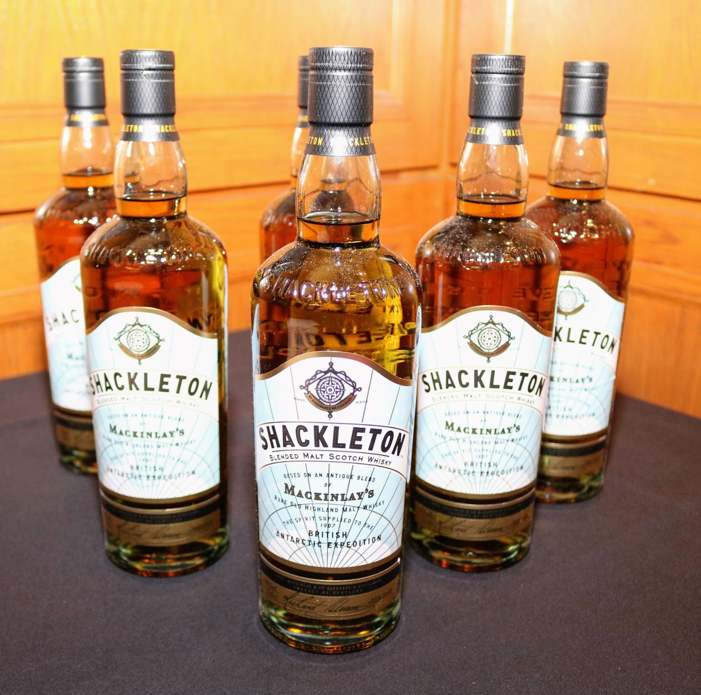
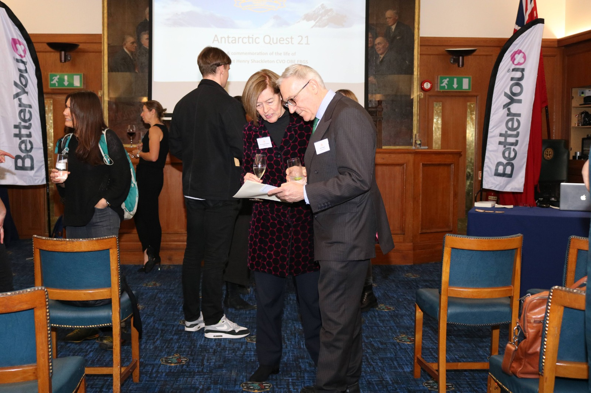
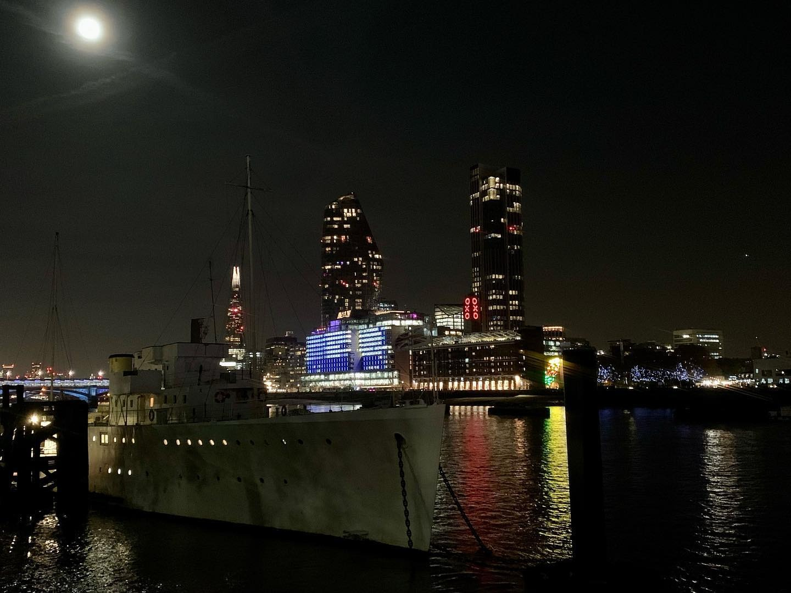
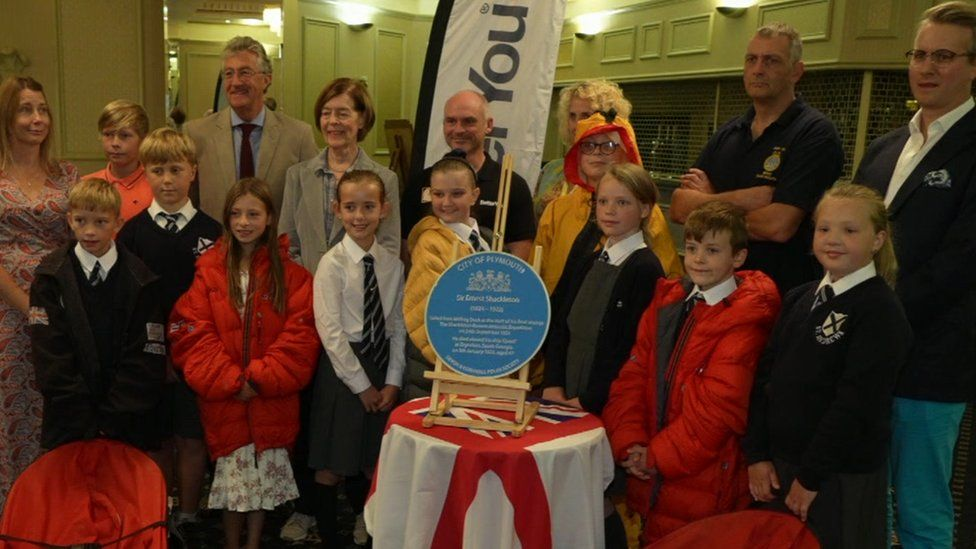
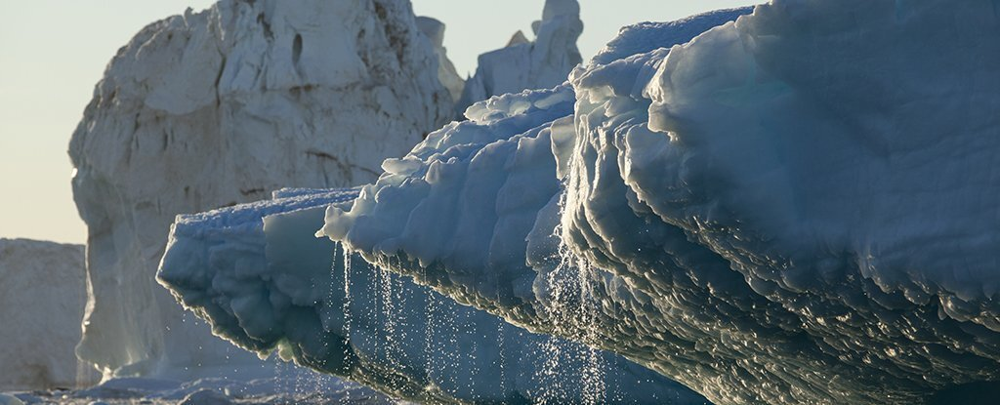
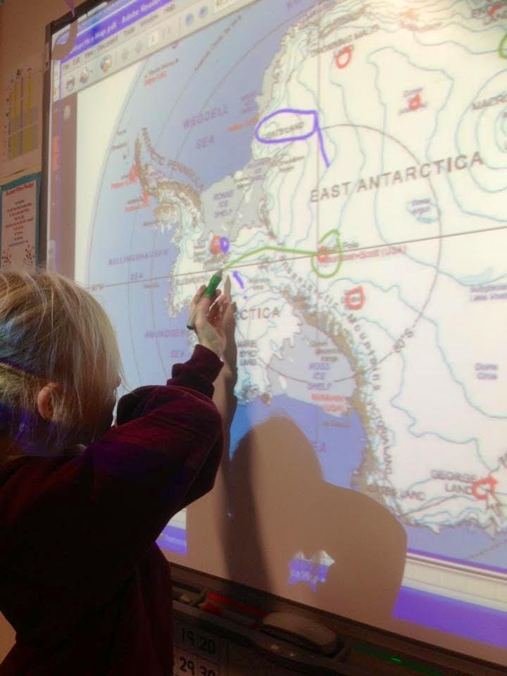
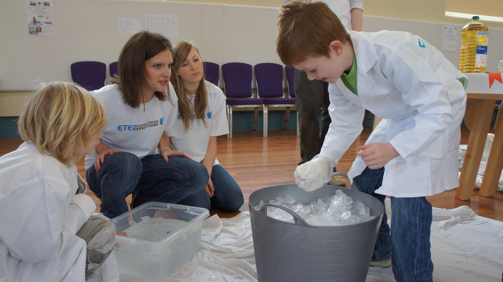

We were delighted to welcome our Patrons, Sponsors and Supporters to our pre-departure event onboard the HQS WELLINGTON, on the Thames, last night. It was absolutely wonderful to be able to provide some small measure of thanks to all those that have supported us by providing an insight into the expedition and our plans. General Richard Nugee, the Non-Executive Director for Climate Change & Sustainability for the MOD, started off the presentation by explaining the Expeditions importance from a perspective of the UK leading on Climate Change and Sustainability. Of great importance to the Expedition Team was a letter of support from the Chief of the Defence Staff, General Sir Nick Carter GCB CBE DSO ADC, who quoted Shackleton’s own words about the Expedition, saying “To be brave cheerily, to be patient with a glad heart, to stand the agonies of thirst with laughter and song, to walk beside death for months and never be sad - that’s the spirit that makes courage worth having”. General Sir Nick also said that the Expedition would be an inspiration to future generations of scientists and explorers.
Then, the Hon. Alexandra Shackleton, explained to the audience how the Expedition was following fully in the Spirit of her Grandfather, Sir Ernest Shackleton and his involvement in the Heroic Age of Polar Exploration. She highlighted the Expedition team are truly stepping into the unknown to further the bounds of understanding and knowledge about Antarctica, just as her Grandfather had 100 years ago. She highlighted the fact that the Expedition Team are a private expedition, without any formal government or institutional support and with nothing more that private backing to make this happen, and this was exactly as it had been with her Grandfather.
Thereafter, the Expedition Leader, Paul Hart gave a brief insight of what it is like to operate on the Antarctic Peninsula, with some hair-raising videos of the conditions the team will face. This was followed by a superb explanation of the science programme of the expedition by the Expedition Science Coordinator, Dr Charlotte Braungardt. Dr Braungardt was able to put the extremely complex issues relating to our impact on Antarctica, into a totally understandable format that enabled the audience to appreciate how every individual can take action to reduce their own input into the negative effects we are having. The presentation then moved on to our Educational Outreach programme, which was led by the Expedition Deputy Leader, Dr Antony Jinman. Antony vitalised the crowd with his message about his own inspirational journey to becoming a Polar Explorer and how he works tirelessly to create the same opportunities for today’s school populations. The formal presentation then ended with a brief by our Expedition Doctor, Alex Cross, and the CEO of BetterYou Ltd, Mr Andy Thomas, on how we will be supported by BetterYou Ltd products, to maintain our peak physical and mental performance on the ice. Finally, there was an auction of items, of which our great friends at Elliot-Brown Watches contributed one of a limited edition of their prestigious watches, which alone raised a four figure sum for the expedition. The Expedition Team were completely overwhelmed by the level of support and sheer good will that was evidenced by the audience, as they provided additional financial support to allow an enduring legacy of Antarctic learning to be delivered through the Expeditions Educational Outreach Programme. As an Expedition, we remain so deeply indebted to our partners and supporters that it is hard to provide words that describe our appreciation. We can only ask, that our efforts to provide a valuable contribution to the understanding of what is happening in the pristine environment of Antarctica and how we can minimise our impact, is sufficient to justify that psychological investment in us.
  We are delighted to be in collaboration with BetterYou Ltd, who are working to support our peak mental and physical performance on the ice during our expedition. This amazing Yorkshire-based natural health brand, has just received one of the most prestigious accolades in UK business: The Queen’s Awards for Enterprise. A 2021 winner in the Innovation category, the brand’s unique and iconic oral spray delivery mechanism allows essential nutrients to be absorbed via the inner cheek in the mouth, bypassing the primary processing of the digestive system. This method is ideal for the growing population with malabsorption issues such as IBS, Crohn’s, and Coeliac disease along with people that cannot, or prefer not, to take traditional tablets. Antarctic Quest 21 wish to offer our sincere congratulations at this achievement and are hugely grateful for all the work being done to support by the company. For more information on this, please visit: https://betteryou.com/pages/queens-award.
The carbon footprint of long-distance transport of cargo varies considerably between modes of transport. For example, the carbon dioxide equivalent (CO2e) of 1 tonne cargo transported between London and Glasgow by rail is 11 kg, by road is 78 kg and by cargo aeroplane is 298 kg (calculated with CarbonCare).
We minimised the carbon footprint of transporting the expedition equipment and food to Antarctica with the support of the company Polar Latitude, who agreed to allow us to store our kit, packed in dozens of barrels, on deck of their vessel MS SeaVenture. SeaVenture makes her way from Bremerhaven, Germany to Ushuaia, Argentina and then to the Antarctic Peninsula as part of her annual cruise plan. Nevertheless, we treated this in the same way as cargo shipped by a commercial container ship. To meet the ship, the equipment was driven by two team members from the Southwest England to Germany, a distance of around 1400 km. It will be returned via the same route.
The carbon footprint was estimated using the CarbonCare CO2 calculator, which is based on the EU EN16258 standard and reported here as ‘Well-to-Wheel’ CO2e values, meaning that the total energy required and greenhousegas (GHG) emissions from the oil well to burning of the fuel in the vehicle or vessel are accounted for. Details can be found here.
Calculations, which include an element of extrapolation for routes not listed in the CarbonCare calculator resulted in a total of 560 kg CO2e for the return voyage of our expedition equipment. This may be a slight over-estimation, as we won’t be returning much of the food. Three elements were included one-way: Road Travel from Southwest England to Bremerhaven by small van: around 1400 km and 195 kg CO2e Ferry from Dover to Calais: around 100 km and 1 kg CO2e
Sea Cargo from Bremerhaven, Germany to Ushuaia, Argentina and on to the Antarctic Peninsula: around 17000 km and 84 kg CO2e.
To put our footprint of 560 kg CO2e for equipment transport into perspective, it amounts to around 5% of the footprint of the average British citizen (around 8000-12000 kg CO2e) and to 3.8% of that of the air freight from London Gatwick to Ushuaia, Argentina (27000 km return, 15000 kg CO2e).
We will compensate for this footprint and report on that in due course.
By Charly Braungardt @ Challenging Habitat.
Team member Rich Simpson is about to undertake his toughest challenge yet, an ultra-marathon travelling the length of Wales in the UK. Lon Las Ultra is a 250mile (just over 400km) race where the competitors are virtually self-sufficient and 'making this possibly the longest non-stop road ultra in the UK.'If you would like to sponsor him even just a penny or cent a mile (even better in kilometres!) then please go to https://www.crowdfunder.co.uk/shackleton-anniversary
To follow along with the competitors, please visit https://track.trail.live/event/lon-las-2021 to view the progress of each competitor!

A plaque has been unveiled in Plymouth marking 100 years since polar explorer Sir Ernest Shackleton left the city on his final expedition to Antarctica.
The memorial was revealed by the granddaughter of the adventurer, alongside members of Antarctic Quest 21, who will be retracing Shackleton's footsteps to mark the centenary. https://www.bbc.co.uk/news/uk-england-devon-58677175
Credit to David Nield

As the polar ice sheets melt, the process is not just raising sea levels – it's also warping the underlying surface of Earth, a new study reveals, and some of the effects can be seen across thousands of miles.
What's happening is that Earth's crust is rising and spreading as the weight of the ice across Greenland, Antarctica, and the Arctic Islands gets lifted. The movement isn't huge, averaging less than a millimeter a year, but it's there and it covers a lot of ground.
There's a feedback loop happening too, because as the bedrock under the ice shifts, that in turn affects how the ice continues to melt and break away. A full understanding of how this works is essential in modeling how our world might look in the future. Read More
Antarctic Quest 21 will be providing the research scientists more information on how this is affecting the earth.
I have introduced Andrew Smedley’s project, for which we will collect data on the intensity of ultraviolet light at the Earth’s surface while crossing the Antarctic Peninsula, on the Science Page of the Antarctic Quest 21 website. Here, in the first of the AQ21 Scientist series of publication digests, I am covering a different aspect of his work, which highlights his expertise in using solar irradiation data to understand the internal temperature profile of ice and in turn, processes that affect ice sheet near-surface melting or ice shelf crack formation. Read More
Check it out here at minute 21:18 : https://www.bbc.co.uk/iplayer/episode/m000x3qr/spotlight-evening-news-17062021 and in case you missed it, we were also on the Forces news channel BFBS: https://www.forces.net/news/military-personnel-prepare-300km-antarctic-climate-change-expedition. If you want to be a part of the exped or simply donate, check out the link at the top of this page for the Crowdfunder. Thank you.
Antarctic Quest 21 is not just about the science we are undertaking during the expedition. It is also about brining science closer to interested people who are not familiar with the jargon scientists use when we communicate our findings within the scientific community.
In this series, I am going to give you a digest of the latest scientific publications authored by the scientists who collaborate with the Antarctic Quest 21 expedition, in plain English. It will provide a wider perspective of science at the frontline of climate, pollution and environmental health research, right here on the Antarctic Quest 21 blog.
Hope you’ll find it interesting, intriguing and enjoyable.
Charly Braungardt
We are hugely excited to announce that we have smashed through the 25% threshold for our Crowdfunded Campaign to enable our expedition to go ahead and to help allow us to deliver our Educational Outreach and Legacy Programmes. This amazing news is thanks to the NAAFI (Navy, Army, Air Force Institute) who have made a major contribution to our expedition, which we extremely grateful for. This donation comes in a significant year for the NAAFI and one that is linked to our own 100th anniversary of Shackleton’s Quest Expedition, as it is the 100th Anniversary of the NAAFI’s creation and we are proud to have them as partners to our Quest expedition. We are hopeful that having obtained this goal, Plymouth Community Change Fund will look favourably on our application for match-funding. This is a great step forward for our Crowdfunding campaign and we now need everyone to step up to the plate and help us achieve our target so we can retain the donations we have had pledged so far - every donation is a step towards that target, irrespective of how large or how small, so please do come and visit the Crowdfunded page and make a donation. Thank you so much to the NAAFI.
Dr Charlotte Braungardt, from the Expedition Advisory Team has produced this superb blog and talks about how you can be a part of this expedition - https://cbraungardt.com/2021/06/07/want-to-reduce-uncertainty-read-on/
With this question, I invite you to come and learn about our expedition and meet the team that will step into untrodden territory for science and exploration, and to commemorate our Polar Hero, Sir Ernest Shackleton.
The answer to the question above may seem obvious: in an age of widespread pollution and climate change, the world that children will experience, is going to be determined by the wisdom of our decisions today. It is, therefore, key that these decisions should be founded on scientific knowledge. Scientific research is fundamental to our world view and to allowing us to use innovation, and technology to deal with issues that we may have unwittingly created, that are to our detriment as a species.
Sir Ernest Shackleton was one of the pioneers of scientific research in Antarctica, a region now recognised as important to global climate regulation. His scientific legacy is unfinished and often under-valued. During our expedition, we will pay tribute to Shackleton with a ceremony on the ice and honour his memory 100 years after his passing, by continuing the scientific exploration his ‘Quest’ expedition could not complete.
We are going to Antarctica to conduct cutting-edge research into climate change and micro-plastic pollution. This will be combined with an outreach programme to educate, inspire and empower people to live more sustainable lives and also protect this last pristine wilderness.
Come and join us for an entertaining hour between 12.30 – 13.30 on 9th June 2021; learn about our plans and how you can follow our expedition. There will be an opportunity to contribute to our expedition, to support our educational outreach programme and Community interest activities. We are seeking to raise funds to support our essential equipment purchases and also to allow us to run our legacy education programme.
We have a number of special items which are on offer for sale; including bottles of the Whisky Shackleton favoured and signed by his Granddaughter, the Hon. Alexandra Shackleton. However, most of all, we want to enthral you with our stories and footage of the unforgiving and incredibly hostile environment we are going to operate in, to push the bounds of Antarctic science with means only available to such rare, man-hauled expeditions.
Details for joining us will be promulgated on the morning of 9th June 2021 on this Blog Page, but you can learn about our prizes as we go forward from this weekend. You will also be able to look at videos linked to our expedition on the same page. We really look forward to meeting you on 9th June for a fun filled Lunch hour.
Please help us. We need to smash this Crowdfunder to get the money for this historic trip. You can be part of it by donating, by buying a reward and by letting your friends, families and contacts know about what we are trying to achieve. It can be large or small. Together we can do this. You can be part of making history. Your investment in what we are doing - both literally and metaphorically - will make sure that the centenary of Shackleton's Final Quest goes down in the history books: where it deserves to be. Thank you so much in advance for all your help and for being part of our team too.
Link: https://zoom.us/j/99082212147?pwd=OFB6SzNDQ3o0N2M0cTNQQ0h5V21ZZz09
Meeting ID: 990 8221 2147
Passcode: 870341
Shackleton’s entire Antarctic career was marked by strange episodes of weakness, breathlessness, and other incapacitating symptoms. His near-superhuman feats coexisted, according to expedition notes, with an occasional inability to stand on his own. While his early death has been widely attributed to heart disease brought on by years of heavy smoking, Shackleton’s intermittent bouts of weakness in his youth have intrigued historians, doctors, and armchair medical detectives for decades.
Antarctic Quest team however will do things differently. Due to the physical demands of the expedition, the deployment team will be consuming a high calorie diet, containing macro and micronutrients to support health, performance and recovery. In addition, the team will be taking supplements where needed, to avoid potential deficiencies which may lead to fatigue or any other symptoms. Read more Ernest Shackleton and the reasons for his weaker episodes at https://www.atlasobscura.com/articles/shackleton-beriberi-antarctica-exploration
The second of our expedition videos is now available - https://www.forces.net/?videoId=6254037478001 - it is a riveting watch as it includes original footage of Shackleton and his expeditions, as well as an interview with his Granddaughter and our Patron, the Hon. Alexandra Shackleton. This is the main reason for the name of our expedition to commemorate Shackleton.
The first of our “Shackleton Commemoration Expedition - Antarctic Quest 21” films - https://www.forces.net/?videoId=6253689545001
Antarctic Quest 21 will contribute to the Ocean Decade's outcomes with scientific data that supports climate change modelling and predictions. Read our story on page 104 of this special edition of ECO Magazine in the context of all the other projects celebrating the Ocean Decade.
ECO Magazine – ‘ECO’ for ‘Environment Coastal & Offshore’ – reports news of ocean science, innovation, technology and exploration to an international audience of governments and policymakers, as well as professionals and NGOs within the global maritime community. For the launch of the United Nations Decade of Ocean Science for Sustainable Development, it partnered with The Intergovernmental Oceanographic Commission of UNESCO (IOC-UNESCO) to publish a digital special edition showcasing initiatives, knowledge and solutions relevant to the seven Ocean Decade outcomes. These include ‘a predicted ocean’, relating to our capacity to understand ocean conditions, forecast their change and relationship to human wellbeing and livelihoods. It is this category, to which Antarctic Quest 21 will contribute and we are delighted to announce the publication of our article ‘What is your next step against climate change?‘ in the special edition on 17th May 2021.
Today, 22 April 2021, is Earth Day – what a better day to take responsibility and launch our footprint audit!
Collectively, humankind use the ecological resources as if we had 1.73 planets, which means that each year sometime in August, we exceed the Earth’s capacity to regenerate what we use or damage in terms of soil, water, agriculture, fisheries, forests and so on …) in one year. Anything we collectively do after this ‘Overshoot Day’ is not sustainable with respect to the biocapacity of our planet.
In addition to these ecological resources, we extract natural resources, our ‘material footprint’, the tonnage of materials extracted to generate our consumer goods (raw materials from which we derive petrochemicals, metals, fertiliser and so on…).
We also generate huge amounts of waste, ranging from the obvious and very visible (e.g. domestic, food and electronic waste, sewage) to the more obscure or invisible (e.g. greenhouse gases, microfibers, pre-consumer industrial waste).
The Antarctic Quest 21 team are preparing for an expedition that supports very important climate and pollution research. But we are also using resources that would have otherwise remained untouched, including
The least we can do is to find out and be honest about the footprint of Antarctic Quest 21. This process will call upon the whole team for information over the next weeks and months and hopefully lead to practical actions that reduce our expedition footprint and mitigate the remainder.
I fully expect that our sustainability audit will also feed into our personal lives: it will teach us all how we can reduce our everyday footprint. Overshoot Day is not someone else’s problem, and Antarctic Quest 21 leadership is about so much more than completing the scientific mission and bringing back the team safely from Antarctica. We are going to share our insights with you.
Written by Charly Braungardt